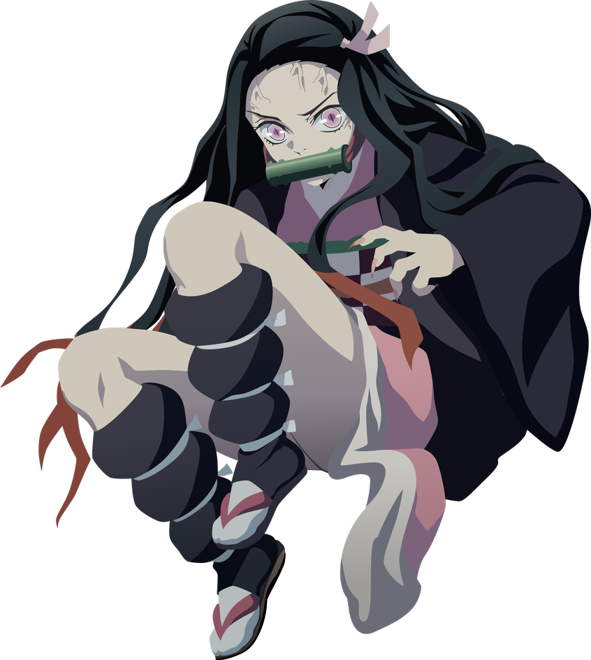

-
Nezuko Kamado
HP 1000
Descrição
Nezuko Kamado é a irmã mais nova de Tanjiro Kamado, antes humana, ela foi atacada e transformada em um demônio por Muzan Kibutsuji.
-
Tanjiro Kamado
HP 900

Descrição
Tanjiro é gentil por natureza e foi descrito por outros como tendo olhos muito gentis. Ele exibe uma grande dose de determinação e não desistirá uma vez que tenha uma meta a alcançar.
-
Zenitsu Agatsuma
HP 1200

Descrição
Zenitsu é um jovem de pele clara e olhos de aparência assustada e inclinados para baixo, que desbotam do marrom suave ao dourado.